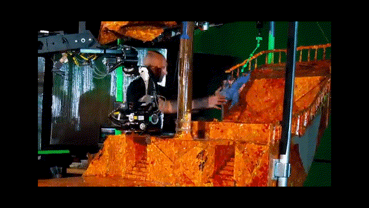

En la teoría cinematográfica, los géneros son una forma de clasificar a las películas en grupos. Cada género está formado por películas que comparten ciertas similitudes, ya sea en su estilo, su temática, su intencionalidad, su forma de producción o el público al que van dirigidas.
Atendiendo a su forma de producción y su intencionalidad, cabe distinguir géneros como los siguientes:
Cine comercial: Son las películas creadas por la industria cinematográfica orientadas al gran público y con la generación de beneficios económicos como objetivo principal. A esta categoría pertenecen la mayoría de las películas que se proyectan en las salas de cine, y algunas de ellas son promocionadas mediante grandes campañas de publicidad.
Cine independiente: Una película independiente es una película de bajo presupuesto y hecha por pequeñas productoras. Una película independiente no es realizada por los grandes estudios.
Cine de animación: El cine de animación es aquel en el que se usan mayoritariamente técnicas de animación. El cine de imagen real registra imágenes reales en movimiento continuo, descomponiéndolo en un número discreto de imágenes por segundo. En el cine de animación no existe movimiento real que registrar, sino que se producen las imágenes individualmente y una por una (mediante dibujos, modelos, objetos y otras múltiples técnicas, como el Stop Motion), de forma tal que al proyectarse consecutivamente se produzca la ilusión de movimiento. Es decir, que mientras en el cine de imagen real se analiza y descompone un movimiento real, en el cine de animación se construye un movimiento inexistente en la realidad.

Cine documental: El cine documental es el que basa su trabajo en imágenes tomadas de la realidad. Generalmente se confunde documental con reportaje, siendo el primero eminentemente un género cinematográfico, muy ligado a los orígenes del cine, y el segundo un género televisivo.
Docuficción, híbrido entre el documental y la ficción, es un género practicado desde el primer documental, que se renueva desde finales de los años cincuenta.
Cine experimental: El cine experimental es aquel que utiliza un medio de expresión más artístico, olvidándose del lenguaje audiovisual clásico, rompiendo las barreras del cine narrativo estrictamente estructurado y utilizando los recursos para expresar y sugerir emociones, experiencias, sentimientos, utilizando efectos plásticos o rítmicos, ligados al tratamiento de la imagen o el sonido.
Cine de autor: El concepto de cine de autor fue acuñado por los críticos de los Cahiers du Cinéma para referirse a un cierto cine en el que el director tiene un papel preponderante en la toma de todas las decisiones, y en donde toda la puesta en escena obedece a sus intenciones. Suele llamarse de esta manera a las películas realizadas basándose en un guion propio y al margen de las presiones y limitaciones que implica el cine de los grandes estudios comerciales, lo cual le permite una mayor libertad a la hora de plasmar sus sentimientos e inquietudes en la película. Sin embargo, grandes directores de la industria, como Alfred Hitchcock, también pueden ser considerados «autores» de sus películas. Se define de acuerdo con su ámbito de aplicación y recepción, ya que no suele tratarse de un cine ligado a la industria, y no se dirige a un público amplio sino específico, y comparte a priori un interés por productos que se hallan fuera de los cánones clásicos. Un subgénero importante podría ser el cine abstracto.
Cine ambiental:El cine no solamente ha puesto en contacto al hombre con la naturaleza en diversos casos, sino que además ha sido, y sigue siendo en ocasiones, militante activo en la lucha por la defensa del medio ambiente. Además, el cine ha sido desde su nacimiento, el más fuerte medio de transmisión de conocimientos y de culturas, aportando a los espectadores infinitas posibilidades de encuentro con paisajes, naturaleza, lugares y costumbres.